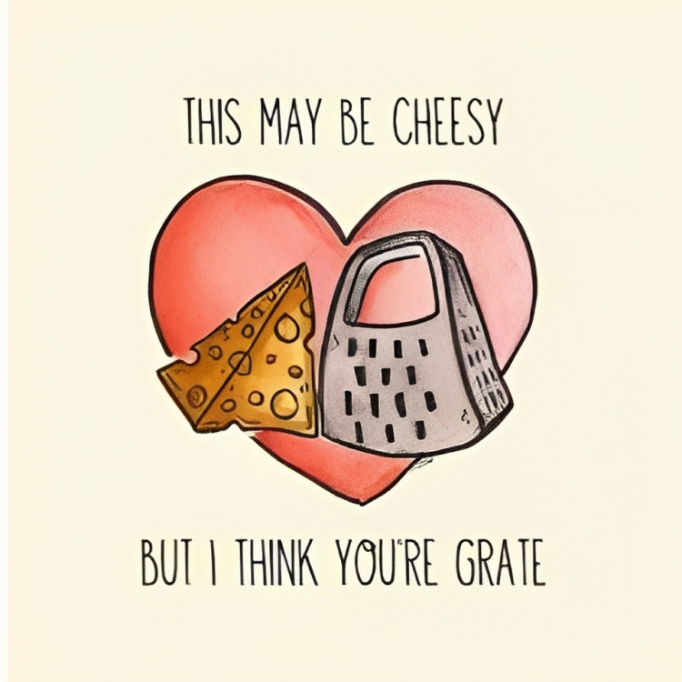

On this day, Saint Valentine martyred. In celebration of his death, the day is celebrated.
Who was this lad you ask?
As far as anyone can tell, the Saint Valentine of Valentine's Day was one of two guys preaching the good word in Rome in the third century. One of these two was martyred on February 14th 269, thus giving us the date for his eponymous day.
So why the theme of love, overbooked restaurants, and the unauthorized hogging of scenic places for proposals?
Nothing. The guy died for heaven's sake. His remains were kept in the Catacombes and that's it. Nothing to do with love. The blame is on Geoffrey Chaucer, an English poet. He created a connection between Saint Valentine and love celebrations. The first written connection between love and Valentine's Day appears in his poem, Parlement of Foules, written in the late 14th century. He appears to have simply invented the correlation and chalked it up to poetic license, though it's also possible that he was drawing from older courtly traditions. Well, I suppose they just went with the flow - rode the wave.
